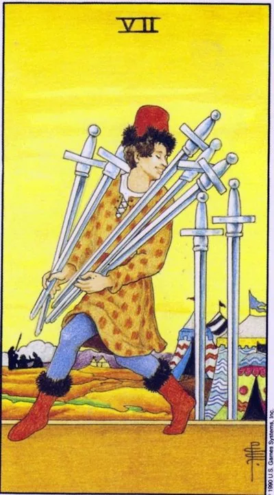

Minor Arcana · Swords
VIISeven of Swords
The figure sneaks out of the camp with a heap of blades, looking over his shoulder: cunning, a detour and a secret that still holds.
Archetype and core meaning
A tiptoe-toe man leaves a military camp with five swords; two are stuck, he didn't take everything, he took what he could. It's a game of bypassing the rules: not fighting, but a loophole; not the truth, but silence. Looking over the shoulder is the card's main gesture: noticed or not?
The two-faced card. In one light, it's survival savvy: when you can't win a game, the tactics that win are to get around, to not tell, to get away from a pointless fight. In another, it's betrayal: someone is already taking the most valuable things out of your home or company by smiling in their face. The moon in Aquarius adds a chill of calculation, where feelings are a tool.
Daily life
You say one thing, you mean another thing; you move off the subject to avoid paying the bills. Sometimes it's a harmless tactic to keep the peace. But check the wallets and the arrangements: seven likes accounting holes. Don't gossip, what's said to third parties will come back to the recipient distorted.
Work and career
Intrigue: information flows to competitors, merit is appropriated by someone else, parallel negotiations are held behind you, your hidden maneuver is possible - confidential job search, bypassing the inhibiting authorities. The card requires quality of execution: ill-conceived cunning is revealed at the worst moment. Check accesses and signatures.
Relationships
There's a double bottom room in a relationship: correspondence that's hidden, meetings without explanation, treason, but perhaps also secret fatigue; in any case, the blindfold will take life off your partner's eyes, lonely people are waiting for a charming interlocutor who doesn't say a lot. Do you do it yourself? Ask: am I protecting the relationship or preparing a spare airfield?
Health
The hidden course of the disease: it's not manifest, so it's more valuable than the physical, to mask the symptoms with self-medication, to let the disease slip away, and the mental mind steals from itself, and the unspoken anxiety returns with night terrors.
Spiritual meaning
The magic of halftones: hidden influence practices, rituals in secret, the art of moving unnoticed and reading other people's plans. The protective aspect is detecting energy theft and induced programs: if everything falls out of hand in external well-being, you need diagnostics. The limit is simple: the secret can be tactics, but not the goal.
The cloak is uncovered: the cunning is exposed or voluntarily admitted - and sometimes the deception is your own self-esteem.
Archetype and core meaning
The moment of truth for the snitch. The first story is: disclosure — the hidden comes up, the machination is visible in the reports, the avalanche of consequences is faster than explanation. The second is the candid confession: the man puts his swords in place because the severity of the mystery has become heavier than the possible scandal.
The third story is self-deception: nobody steals anything but self-confidence: the imposter syndrome whispers that merit is luck, knowledge is not enough, space is alien. The person steals his own right to occupy space. All branches converge on one point: the recognized truth heals, the crumpled rot.
Daily life
Household secrets come out: an unsettled waste is discovered, someone else's secret is revealed that you'd better not know. If your conscience is sharpening on what you've lost, correct it right away while the price is low. And watch the internal dialogue: it's easy today to believe in your own failure without objective reasons.
Work and career
The intrigue is solved, the author is named, perhaps with your last name. Say first: a voluntary confession before charges saves reputation. The flip side is your own doubts: a promotion is offered, you are sure it is a mistake. Facts versus feelings: keep a list of real results.
Relationships
Secrets are no longer secrets: the partner discovers the hidden — or you decide to tell yourself. Scandal is likely, but honest scandal is more productive than the perfect facade. The second plot is self-depreciation in love: "he finds out the real me, he leaves." The couple is tested not by the absence of secrets, but by how they survive their opening.
Health
Diagnosis catches up: tests show that the body has been silently patient, and treatment has finally begun. The price of masking symptoms comes quickly. The second plan is self-esteem health: self-distrust gives clamps, a lost appetite, a nervous cough before speaking. Small recorded victories help.
Spiritual meaning
Magical audit: spells created half-true give back cravings; secret practices require honest intent; diagnostics reveals someone else's negativity that hasn't been completely removed; working with an impostor is the return of scattered power: listing what you've done, thanking your tools; the recognized gift starts working.
🌿 How the school reads this rank
The main idea
Seven clever ways of doing things: victory comes from tactics and bypass maneuver, not direct force.
How it manifests
It's about strategy, gathering information, and doing the wrong thing. It's about diplomacy where a direct response can hurt. It teaches you to be cunning, not cheating.
The shadow side
The trick turns against the person himself: self-deception, lies, cheating and a confusing story.
Keywords
cunning · tactics · strategy · diplomacy · self-deception
📜 In detail — from the rank lecture
Essence of the card
The trick is that "seven swords are seven clever ways of doing things": victory comes from military cunning, not force: a thief who enters the camp "preserves his life and potential victims of direct combat."
Upright position
- Direct position: a tactician and strategist with many options; the smart one is inferior to the one who thinks he is the smartest – “the smart one will not go uphill, the smart one will go around.”
- Waite’s symbolism: swords are carried carefully – much information requires slow processing; two abandoned swords = know everything is impossible; white background = purity of thoughts, gold = nobleness of judgments – “be cunning, but not a deceiver”.
- Work: valuable frame collects information from closed sources, feels nuances, offers non-standard moves; the image of the school is “Ocean’s Eleven”: a multi-step plan of synchronized actions (“and still something necessarily goes wrong”).
- Relationships: avoiding direct response for good (the example of “this dress is full”); the essence of betrayal is precisely deception and violation of a promise, not the fact itself; evasive speech about feelings (“normal heroes always go around”) is already a negative.
Negative meaning
Self-deception – “outsmarted himself”, thought for a long time where it is solved elementary; argued with a fool instead of letting him make a mistake; own lies with seven versions of the past that can not be kept in mind; IT specialists “read the Internet and diagnose themselves”; cheating, theft, marriage fraudster and Alphonse.
School emphases and distinctive points
- Astrology of the sevens is not at all: there are no references to the Zodiac and houses here (the only word "astrological" is about someone else's deck of Madar); the wheel of the Zodiac is the prerogative of the older arcana.
- There is no “Slavic series” in the usual sense – folklore is reduced to the Russian proverbial semantics of the set; plus Friday as the day of Venus and Aphrodite, where it is harder not to succumb to laziness (“seven Fridays a week” – about the nursing breakfast).
- Medieval reality: the day off in a week was one - the base of the plot about refusal to work on the seventh day.
- Cinema and culture: Ocean's Eleven and Paper House as noble seven swords, blinking frames of Ostap Bender (imagined future), Master and Margarita (heroes need peace and quiet), the song "normal heroes always go around", Socrates: "the more I know, the better I understand how little I know."
- Book controversy: modern literature on the Tarot - repackaging ("Take other people's meanings, wrap in other words - the book is ready"); copy from Crowley and Banzhaf; he approves of Banzhaf himself - "at the initial stage, the perfect, simple and accessible language goes", although the senior arcana on the big myth there are not disassembled; Osho Zen for him - marketing around the author's name.
- Practice: beginners five years to work straight and inverted (“sit from mechanics to machine”); the negative of a direct card read neighbors and intuition.
- Values are built from the progression of the series: five → six → seven, with the announcement of eight (joy to work / leaving without the desired cup).
Keywords
cunning; "seven clever ways of acting"; military cunning instead of force; "cunning, but not a deceiver"; self-deception.